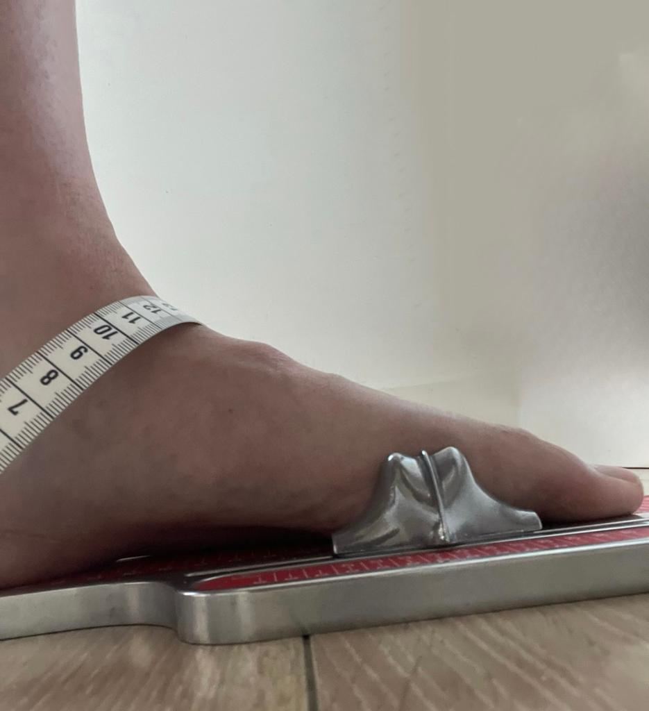
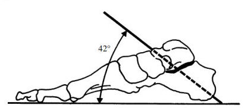
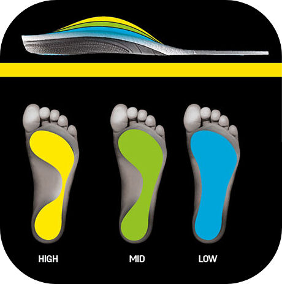
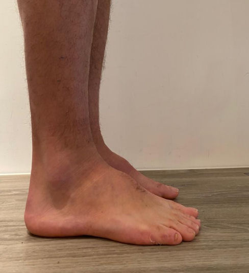

Een hoge wreef en een holvoet? Wat nu?
Het is geen geheim dat alle skischoenen worden gemaakt voor een gemiddelde voet. Wat een gemiddelde voet is, daar kom ik zo op terug. Maar hoeveel mensen hebben nou een gemiddelde voet die probleemloos in een confectie skischoen past? En met confectie bedoel ik een skischoen die je zo uit de doos aantrekt.
Gelukkig hoeft dat tegenwoordig niet meer want bootfitten, of op zijn minst, het aanpassen van skischoenen, wordt steeds vaker aangeboden. Maar wat als je ver buiten de gemiddelden valt? Met een buitengewoon hoge wreef bijvoorbeeld?
Een gemiddelde voet, bestaat die eigenlijk wel?
Grofweg worden voettypen in drie categorieën ingedeeld. In de podologie bestaan er wel acht typen maar voor het skiën beperken we ons tot drie:
– een zogenaamde platvoet (planes in latijn) plm. 12% van de bevolking
– holvoet (met hoge wreef (cavus in latijn) plm. 10% van de bevolking
– neutrale- of normale voet (rectus in latijn) plm. 78% van de bevolking
> Ik spreek liever van een neutrale voet want ja, wat is normaal?
Hoewel 78% dus een neutrale voet heeft kan je natuurlijk niet spreken van dé gemiddelde voet. Elke voet en mens is natuurlijk anders maar bij het maken van skischoenen moet men ergens vanuit gaan. De skischoen-fabrikanten gaan uit van de neutrale ofwel de rectus voet.
Het bepalen van het voettype…
Als u een holvoet heeft is dat op zich niet zo'n ramp maar een holvoet kan gepaard gaan met een hoge wreef. En juist dat laatste is nou net iets dat in een skischoen kan leiden tot heftige pijn en een branderige voorvoet. Zoals eerder gezegd, wordt de gemiddelde skischoen gemaakt voor een gemiddelde of neutrale voet. Maar hoe wordt nu bepaald of u een plat-, neutrale- of holvoet heeft. Hierna bespreek ik enkele methoden.
Een platvoet is vaak duidelijk te herkennen maar lastiger is soms het onderscheid tussen een holvoet en een neutrale voet te vinden. En dat is nou juist cruciaal in het skiën.

In de podologie is er een welhaast wiskundige formule voor: het meten van de subtalaire as (STA). Als de hoek met de grond groter is dan 42 dan spreekt men van een holvoet. U begrijpt dat deze methode van opmeten erg ingewikkeld is bij het aanmeten van een skischoen.Voeten opmeten in een skiwinkel

In een gemiddelde skiwinkel wordt het voettype bepaald door middel van de afdruk van de voetzool. Op zich is dat een aardige indicatie maar ook niet meer dan dat. Het is slechts één aspect van de o zo belangrijke meting. En daar gaat het vaak fout. In de afbeelding hiernaast zie je de verschillende voetypen staan zoals die soms door skiwinkels wordt bepaald. Meestal gebeurt dit op het oog maar soms ook op een soort gelmat die de afdruk laat zien.Op basis van deze afdruk wordt bepaald of u high, mid of low voetboog heeft. Dit is dan bepalend voor het zooltje maar meestal niet voor de maat van de kiezen skischoen. En dat is jammer want het kán zoveel beter.
Voetvolume en wreefhoogte doormiddel van de H.I.P. maat
Bij het aanmeten van skischoenen is een aantal maten van belang. Natuurlijk de lengte van de voet gemeten in Mondopoint (dat zijn gewoon centimeters) en de breedte van de voet, gemeten in millimeters. Maar ook de wreefhoogte en het voetvolume zijn belangrijk voor de skischoenkeuze.
Maar als je alleen het voettype bepaalt op basis van de afdruk (high, mid of low), kan je er wel eens goed naast zitten. Een voet met een hoge wreef kan een afdruk laten zien van een platvoet en, bijvoorbeeld een neutrale voet, laat een afdruk zien van een holvoet.
Om dergelijke vergissingen uit te sluiten is er de zogenoemde H.I.P maat ontwikkeld. Dit is naast de voetlengte en -breedte een maat die medebepalend is voor de skischoenkeuze. Helaas is deze methode niet wijdverbreid maar wij bij DutchBootFitter gebruiken hem al jaren.
Wat is de H.I.P. maat precies?
H.I.P staat voor 'Heel Instep Perimeter' geïntroduceerd door Salomon maar geleend van de orthopedisch schoenmakerij.
Naast de voetlengte en -breedte meet men het volume over de wreef op een zogenaamde Brannock voetmeter, zoals deze afbeelding laat zien.
Er is een verhouding tussen voetlengte en de HIP maat, namelijk één-op-één. Dat wil zegen als bijvoorbeeld de voetlengte van 27,5 wordt gemeten en de HIP maat ook 27,5 is dan kan men van een neutrale voet spreken. Is de Hip maat in dit geval lager dan 27,5 dan gaat het om een platvoet.
Is de HIP maat groter dan de voetlengte dan gaat het om een holvoet met hoge wreef. U kunt zich voorstellen dat de HIP maat consequenties heeft voor de skischoenkeuze!
Is de HIP maat twee maten groter dan de voetlengte, in ons voorbeeld 27,5 dus een HIP van 29,5 dan kiezen we voor een skischoen maat 28,5 en dat is opmerkelijk. Zeker als je bedenkt dat bootfitters er altijd op beducht zijn skischoenen niet te groot aan te meten.
De H.I.P. maat is dus wel degelijk maatgevend en zou altijd gemeten moeten worden bij het aanmeten van skischoenen
Als de H.I.P. maat véél groter is dan de voetlengte?

Als de H.I.P. maat meer dan twee maten groter is dan de voetlengte, dan spreekt met dus van een behoorlijke holvoet. Soms ligt de verhouding voetlengte en HIP zo ver uit elkaar (bijvoorbeeld drie of vier maten) dat er moet worden gekozen voor een volledige op maat gemaakte skischoen van Strolz.
Bij DutchBootFitter adviseren wij u graag verder. Want skiën met een hoge wreef kan ook voor u pijnloos!